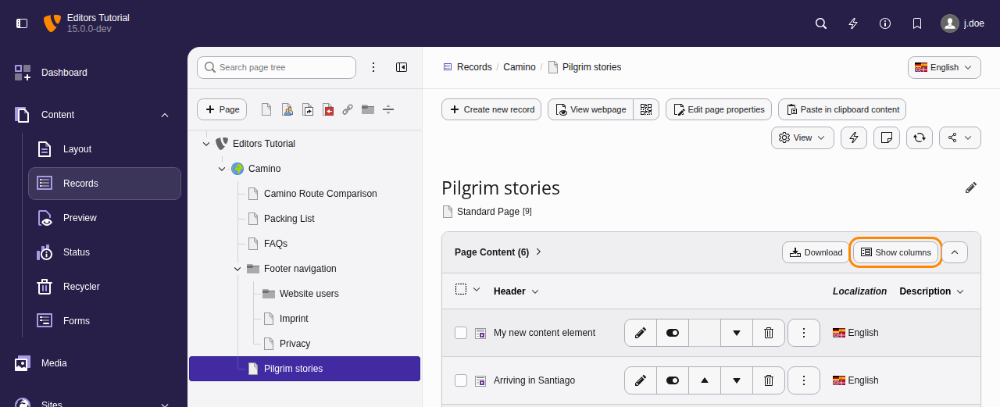
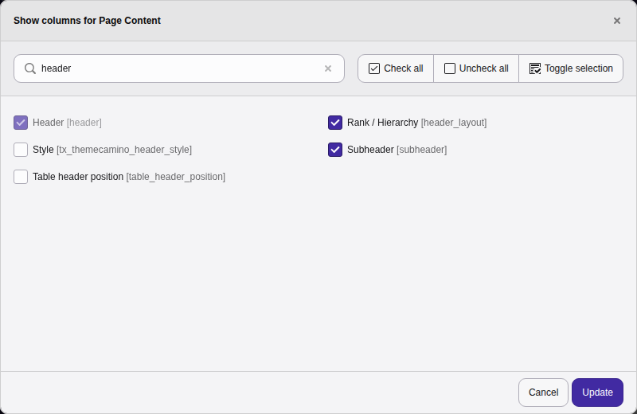
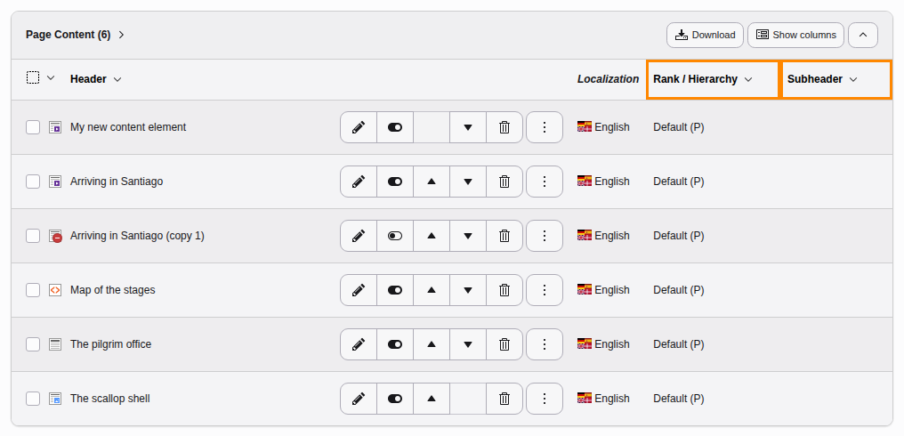
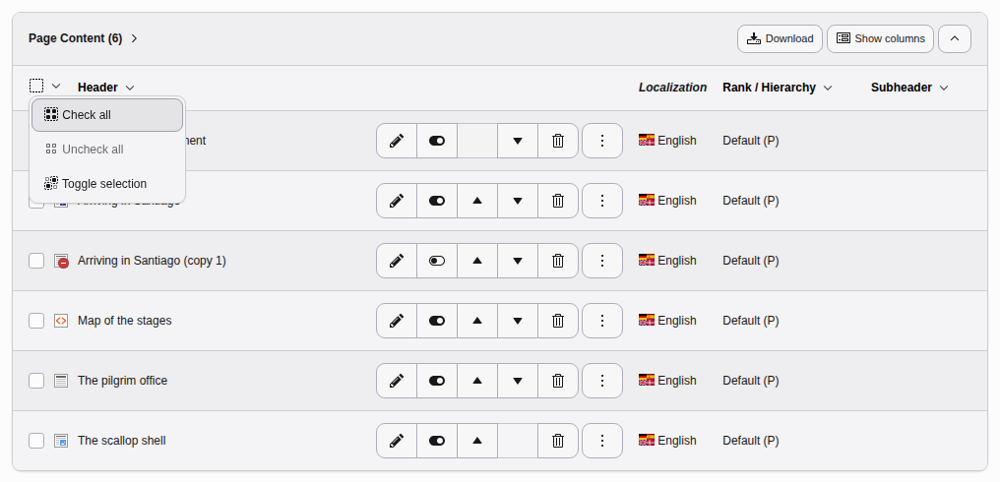
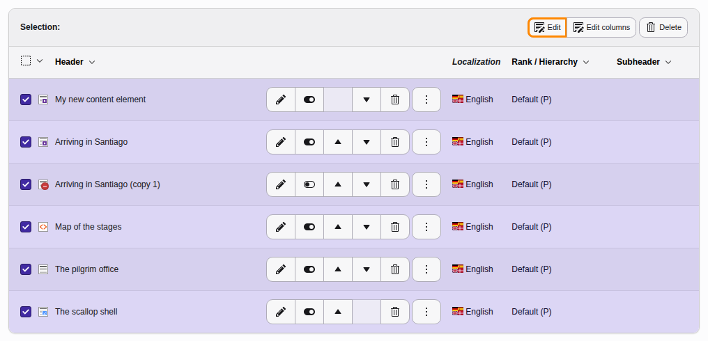
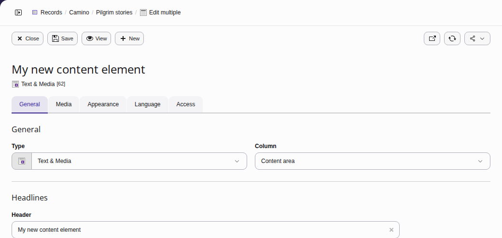
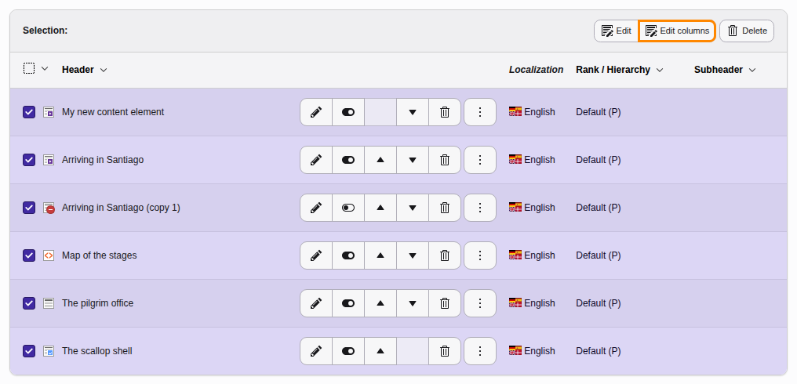
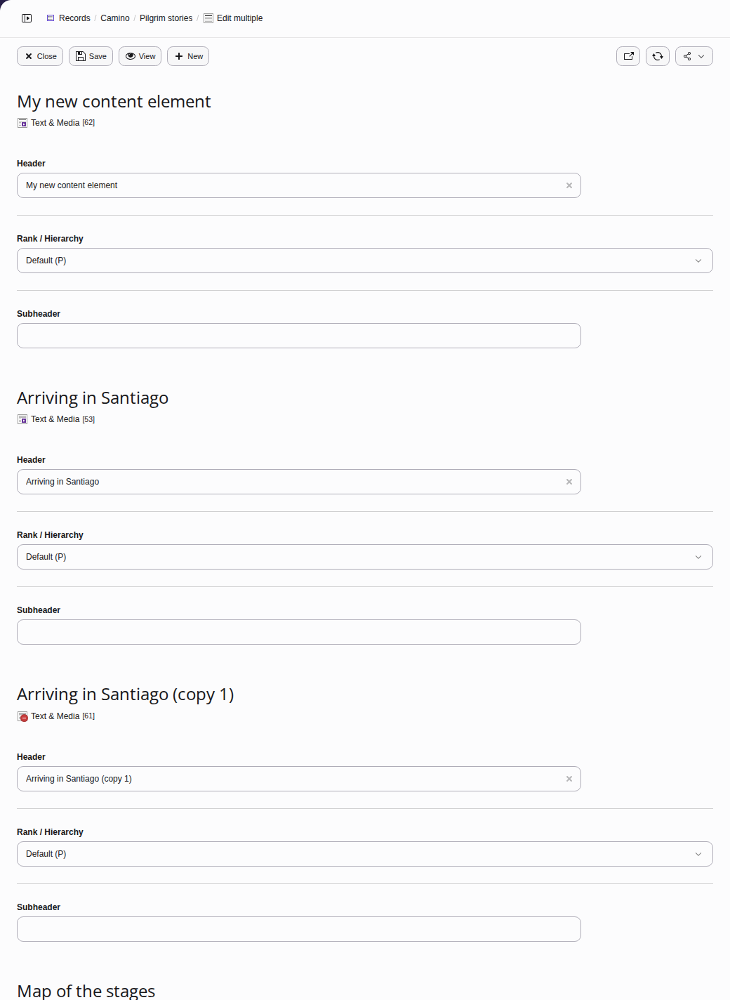
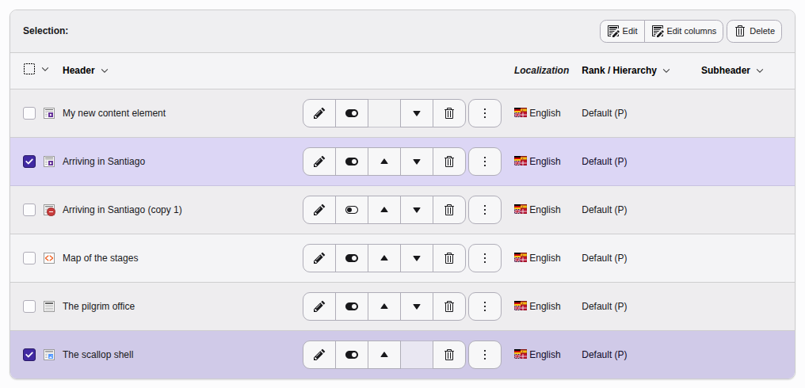

Mass editing
Use the Content > Records module to bulk edit multiple content elements on a page at the same time.
Select the page you want to edit in the page tree in the middle pane (here "Pilgrim stories"). The content elements on the page are displayed in the right-hand pane under Page Content.

The Show Columns button
Select the fields you want to edit by clicking on the Show Columns button ("Columns" refers to content element fields). Here we select Rank / Hierarchy and Subheader. Click on the Update button.

Choose the fields to be displayed and click "Update"
The added fields now appear on the right:

Content element fields
Bulk edit all content elements on a page
First select all the content elements on the page by clicking in the dropdown box on the left and selecting Check all (Toggle selection reverses the selection).

Select all content fields
You can now choose either the Edit button or the Edit columns button.
Click on the Edit button to display a screen to edit all fields of the selected content elements.

The Edit button to edit all content element fields
The screen will look as follows, with the content elements displayed one after the other. Click on Save after you have finished editing.

The multiple edit screen
Or edit only the displayed fields you have selected by clicking on the Edit columns button:

The Edit Columns button to edit just content element fields that are selected in the right-hand pane
The screen will look as follows (here with the fields Header, Rank / Hierarchy, and Subheader). Click on Save after you have finished editing.

The multiple edit screen for selected fields
Edit selected content elements
Select the content elements which you would like to edit (here "Arriving in Santiago" and "The scallop shell"):

Selecting records for editing
Then follow the instructions for bulk editing all the fields (Edit button) or only the displayed fields (Edit columns button) in the previous section.